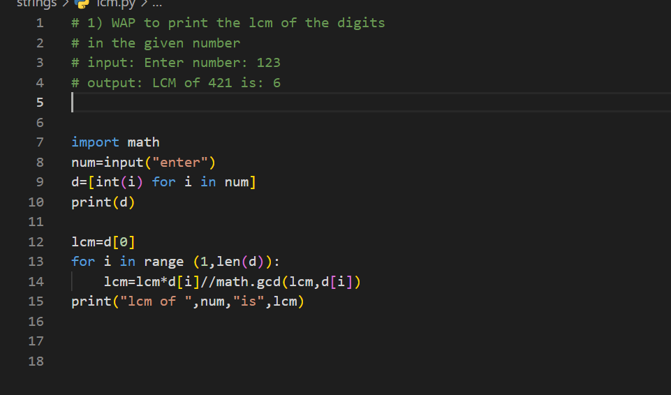

# 1) WAP to print the lcm of the digits
# in the given number
# input: Enter number: 123
# output: LCM of 421 is: 6
import math
num=input("enter")
d=[int(i) for i in num]
print(d)
lcm=d[0]
for i in range (1,len(d)):
lcm=lcm*d[i]//math.gcd(lcm,d[i])
print("lcm of ",num,"is",lcm)
